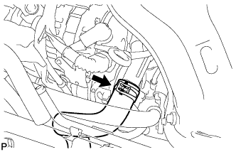

Thermostat (2AZ-FE) Removal |
| 1. Drain Coolant (Toyota Genuine Super Long Life Coolant) |
Loosen the radiator drain cock plug.
Remove the radiator cap and drain the coolant.
Loosen the cylinder block drain cock plug and drain the coolant from the engine.

| 2. Remove Radiator Upper Air Deflector |
Remove the 8 clips and the radiator upper air deflector.
| 3. Disconnect Radiator Outlet Hose |
 |
Slide the clamp and disconnect the radiator outlet hose.
| 4. Remove Water Inlet |
 |
Remove the 2 nuts and disconnect the water inlet from the cylinder block.
| 5. Thermostat Removal |
Remove the thermostat and gasket.